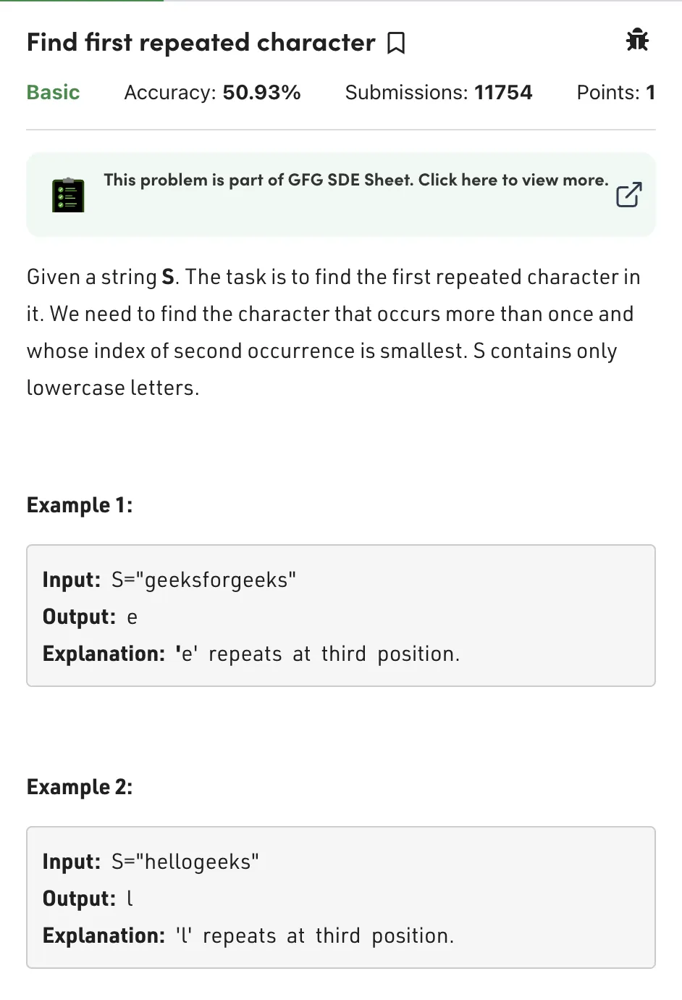
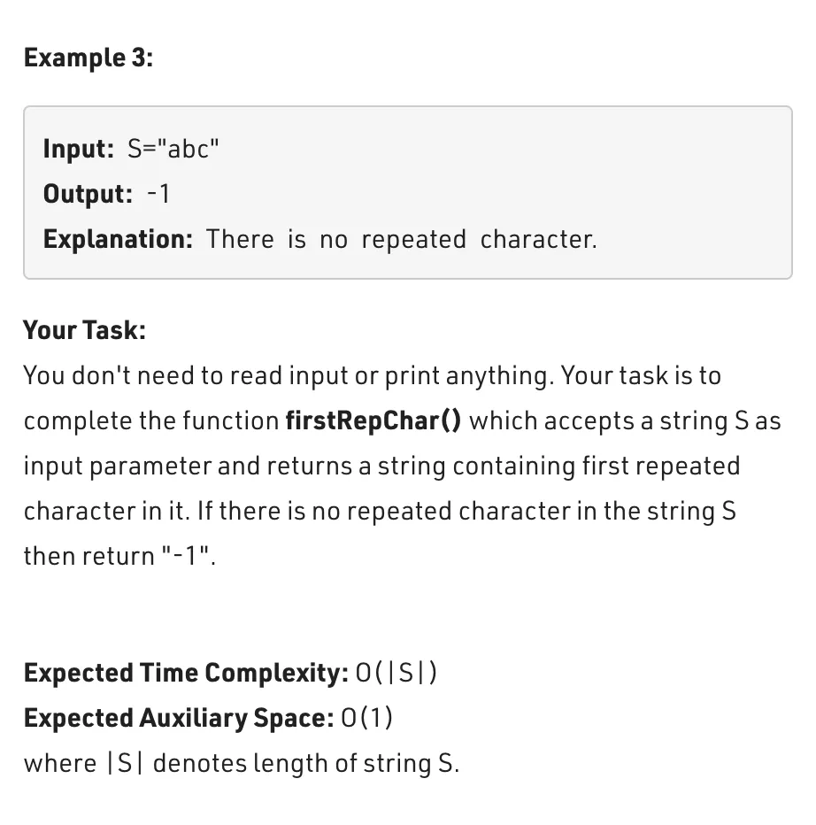

Find the first repeated character in a string
考過的公司：Asked by: Bytedance
Question


✍🏽 My Solution - Hash
class Solution
{
String firstRepChar(String s)
{
HashSet<Character> set = new HashSet<>();
// code here
for (Character c : s.toCharArray()) {
if (!set.add(c)) return String.valueOf(c);
}
return "-1";
}
}
🧠 Thought Process
- Why did I choose this particular implementation?
- 遍歷數組加入set，return重複的值
- 但是不符合題目要求的O(1) space
- What is the time/space complexity of my solution? How do I know?
- time : O(s)
- space: O(s)
Solution #1 [數組]
class Solution
{
String firstRepChar(String s)
{
int[] map = new int[128];
for (Character c : s.toCharArray()) {
if (map[c] > 0) {
return Character.toString(c);
} else {
map[c]++;
}
}
return "-1";
}
}
Explanation (in my words)
- How does their solution work?
- 有人說空間算是O(1)
- Note: Expected Auxiliary Space is O(1) because the hashmap or set in any case will only store 26 chars before finding a repeated character, and is not O(N) but O(26) ===> O(1)Reply Open Externally
- What is the space/time complexity of their solution?
- time: O(s)
- space: O(1)